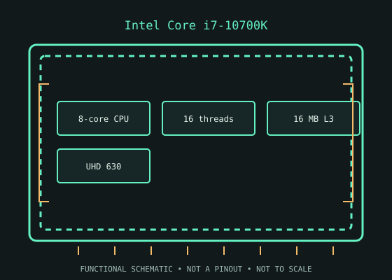

[ INTEL DESKTOP CPU // MODEL RECORD ]
Intel Core i7-10700K
Comet Lake-S (10th-generation Core), Q2 2020; 8 cores / 16 threads; 3.80 GHz base; up to 5.10 GHz Intel Turbo Boost; 16 MB Intel Smart Cache (L3); 125 W processor base power. Verify the physical model marking and platform support before installation.

MODEL IDENTIFICATION: Intel Core i7-10700K. Specifications refer to this SKU; related suffixes and revisions may differ.
Verified model specifications
| Catalog path | Intel → Core desktop generations |
|---|---|
| Model / generation | Comet Lake-S (10th-generation Core), Q2 2020 |
| Core and frequency | 8 cores / 16 threads; 3.80 GHz base; up to 5.10 GHz Intel Turbo Boost |
| Cache / processor power | 16 MB Intel Smart Cache (L3); 125 W processor base power |
| Package / socket | FCLGA1200 (LGA1200) |
| Memory | Dual-channel DDR4-2933 |
| Integrated graphics | Intel UHD Graphics 630 |
Compatibility and service notes
- Use an LGA1200 motherboard whose exact board revision and BIOS support the i7-10700K. 400-series and 500-series are the corresponding platform generations, but CPU lists, firmware requirements, power behavior, and overclocking enablement differ. K-series ratio overclocking requires a board/chipset that exposes it (typically Z-series) and adequate cooling/power delivery.
- The i7-10700K includes UHD Graphics 630; the i7-10700KF omits an integrated GPU. K marks the unlocked version, unlike the i7-10700.
- Before installation, compare the full processor marking with the motherboard maker’s support list and minimum BIOS, then confirm cooler mounting, memory type, power delivery, and firmware settings. Socket fit alone does not establish compatibility; never force the package.
Service & archival record
Record the full model/ordering code and S-spec, stepping, board revision, BIOS/microcode, memory configuration, cooler, power profile, physical condition, provenance, and source revision. Separate measured behavior from published specifications.
Handle the package by its edges and protect socket contacts. Inspect for contamination, damaged pads/pins, and uneven cooler pressure before use.
Sources & further reading
- Intel ARK — Intel Core i7-10700K product specificationsIntel’s official product-specification lookup/page for the exact processor model.
- Intel — Desktop processor installation supportManufacturer guidance for installation and socket handling; use the motherboard maker’s exact CPU-support list for board and BIOS compatibility.
Verify board revision and firmware with its manufacturer; ARK specifications do not guarantee compatibility with every motherboard sharing a socket.